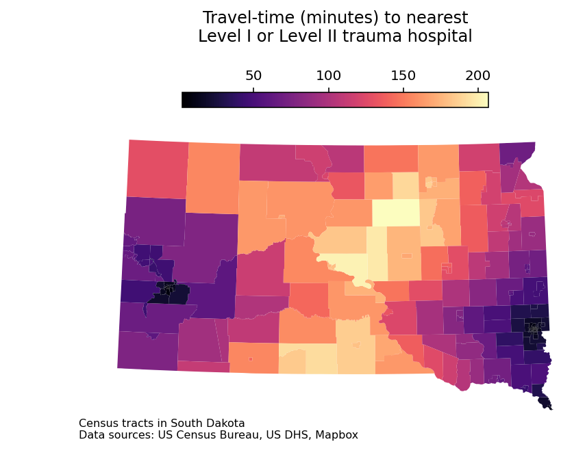

Spatial data science projects frequently require the calculation of proximity to resources. Analysts in fields like health care, real estate, retail, education, and more are commonly tasked with finding out what resources are near to a given location, and potentially develop strategies to fill identified gaps in resource access. In Chapter 7 of my book Analyzing US Census Data, I illustrate a workflow that shows how to analyze accessibility from Census tracts to major trauma hospitals in Iowa. In this post, I’ll show you how to reproduce the first part of that analysis in Python for the neighboring state of South Dakota.
Similar to the section in my book, this post will cover how to calculate proximity in two ways: using straight-line (Euclidean) distances in a projected coordinate system, and using driving times derived from a hosted navigation service. You’ll learn how to compute distances using built-in tools in geopandas, and also use the routingpy Python package to interact with Mapbox’s Navigation APIs.
Getting and formatting location data
To get started, we’ll need to acquire and format data on both Census tracts and hospitals. We can get Census tract boundaries for South Dakota using my pygris package; we’ll then use the .to_crs() method to transform to an appropriate projected coordinate reference system for the area.
The hospitals can be downloaded from the US Department of Homeland Security’s Homeland Infrastructure Foundation-Level Data (HIFLD) portal. HIFLD includes open, frequently-updated datasets on “critical infrastructure” such as schools, pharmacies, and health care facilities. After reading in the downloaded file, we subset the data using a regular expression and .str.contains() to include only Level I and Level II trauma centers, and drop any duplicated records.
import geopandas as gpfrom pygris import tracts# Coordinate system: State Plane South Dakota Northsd_tracts = tracts("SD", cb =True, year =2021, cache =True).to_crs(6571)hospitals = gp.read_file('Hospitals.geojson').to_crs(6571)trauma = hospitals.loc[hospitals['TRAUMA'].str.contains("LEVEL I\\b|LEVEL II\\b|RTH|RTC")]trauma = trauma.drop_duplicates(['ID'])
Using FIPS code '46' for input 'SD'
The next step is to identify those trauma hospitals that are near to South Dakota. While the hospitals dataset does have a STATE column, we don’t want to filter the dataset for only those hospitals that are located in the state. In some cases, the nearest trauma hospital might be in a different state, and we don’t want to exclude those from our analysis.
The approach here identifies all trauma hospitals within 100 kilometers of the South Dakota border, or within the state itself. We use a sequence of common GIS operations with geopandas to accomplish this. Our steps include:
Combining the South Dakota Census tracts into a single shape with the .dissolve() method;
Drawing a new shape that extends to 100km beyond the South Dakota border with the .buffer() method;
Using an inner spatial join to retain only those trauma centers that fall within the 100km buffer shape.
sd_buffer = gp.GeoDataFrame(geometry = sd_tracts.dissolve().buffer(100000))sd_trauma = trauma.sjoin(sd_buffer, how ="inner")
After running this operation, we can draw a quick plot to show the relationships between Census tracts and hospitals as in Section 7.4.1 of Analyzing US Census Data.
import matplotlib.pyplot as pltimport seaborn as snsfig, ax = plt.subplots(figsize = (8, 5))sd_tracts.plot(ax = ax, color ="grey")sd_trauma.plot(ax = ax, color ="red")
<AxesSubplot: >
There are seven Level I or Level II trauma centers within 100km of South Dakota (in fact, all are Level II). In fact, only three are actually in the state, with two in Sioux Falls and one in Rapid City. Three others are in North Dakota (Bismarck and Fargo) and one is just across the border in Sioux City, Iowa.
Calculating distances to trauma centers
The simplest way to calculate proximity is with straight-line distances. In a projected coordinate system, this amounts to little more than Euclidean geometry, and such distance calculations are readily available to us using the .distance() method in geopandas. Conceptually, we’ll want to think through how to represent polygon-to-point distances. The most accurate approach would likely be to find the population-weighted centroid of each Census tract using some underlying dataset like Census blocks. In the example here, I’m taking a more simplistic approach by finding the geographic centroid of each tract. The centroids are found in the centroid attribute of any polygon GeoDataFrame.
Once the centroids are identified, we can iterate over them with apply and build a dataset that represents a distance matrix between Census tracts and trauma hospitals. Distances are calculated in meters, the base unit of our coordinate reference system (State Plane South Dakota North).
Let’s take a quick look at how distance to the nearest trauma center varies around South Dakota. We’ll use the .min() method to find the minimum distance to a hospital for each row, then divide the result by 1000 to convert the distances to kilometers. We can then draw a histogram to review the distribution.
Over 60 Census tracts are within 10km of a trauma center, reflecting tracts located within the population centers of Rapid City and Sioux Falls. However, many tracts in the state are beyond 100km from the nearest trauma center, with 26 200km or more away.
We know that in rural areas, however, straight-line distances can be misleading. Given the geography of highway networks, accessibility to a trauma center is mediated through accessibility to that road network. Let’s take a look at an alternative approach to calculating proximity to hospitals with a hosted routing service.
In routingpy, Mapbox’s web services are referenced as MapboxOSRM. We’ll need a Mapbox account and access token to access these services; I’m storing mine in a variable named mapbox_key. I then initalize a connection to Mapbox with MapboxOSRM(), which I am calling mb.
from routingpy.routers import MapboxOSRMmb = MapboxOSRM(api_key = mapbox_key)
In the mapboxapi R package, the processing required to prepare datasets for the Mapbox APIs is taken care of internally. To calculate a travel-time matrix in Python, we’ll need to do some data processing to format our Census tracts and hospitals in the correct way before we send them to the routing service.
Below, I’m defining a function points_to_coords() to convert a given GeoDataFrame of points to a list of lists, with each list element representing the XY coordinates of a given input point in the dataset. We’ll then call the function on the Census tract centroids and the trauma hospitals datasets.
# Function to convert points to coordinatesdef points_to_coords(input): geom =input.to_crs(4326).geometryreturn [[g.x, g.y] for g in geom]# Generate list of coordinatestract_coords = points_to_coords(tract_centroids)hospital_coords = points_to_coords(sd_trauma)
Next, we’ll set up some custom code that allows for the creation of a 242 by 7 travel-time matrix. This is necessary because Mapbox’s Matrix API only allows for a maximum of 25 coordinate pairs per request, and we have 249 total! Let’s run the code, then walk through the steps we took.
import pandas as pdsplit_size =25-len(hospital_coords)chunks = [tract_coords[x:x + split_size] for x inrange(0, len(tract_coords), split_size)]times_list = []for chunk in chunks: all_coords = chunk + hospital_coords# Find the indices of origin and destination origin_ix = [x for x inrange(0, len(chunk), 1)] hospital_ix = [y for y inrange(len(chunk), len(all_coords), 1)]# Run the travel-time matrix times = mb.matrix(locations = all_coords, profile ="driving", sources = origin_ix, destinations = hospital_ix)# Convert to a dataframe times_df = pd.DataFrame(times.durations) times_list.append(times_df)all_times = pd.concat(times_list, ignore_index =True) all_times.head()
0
1
2
3
4
5
6
0
7888.9
22103.4
22233.8
11812.5
19938.0
3821.1
3672.0
1
14748.0
14480.9
14611.3
12718.5
17358.1
10649.7
10531.1
2
10251.6
18023.1
18153.5
7747.9
22173.1
6183.8
6034.7
3
8646.7
20428.2
20558.6
15953.4
15610.0
4548.4
4429.8
4
26589.6
17174.6
17177.2
27658.8
3819.9
22491.3
22372.7
You can interpret the code above as follows:
Given that we have far more coordinates than the Matrix API’s limit of 25, we need to split up our origin coordinates into chunks. We identify a split_size as 25 minus the number of hospitals (7); this is 18. We then split the Census tract centroid coordinates into chunks of 18 using a list comprehension.
Next, we initialize a list to store our chunked output, and iterate through the chunks. This process involves the following:
We’ll combine the list of origin coordinates (for a given chunk) and the hospital coordinates in the object all_coords;
Next, we identify the indices of the origin coordinates and the hospital coordinates in all_coords. This is critical information that we’ll need to pass along to the Mapbox Matrix API.
We use mb.matrix() to make a request to the Matrix API. The request requires a list of coordinates; a travel profile; and the source and destination indices.
Once we get the results back, we’ll create a pandas DataFrame and append to times_list.
Finally, we use pd.concat() to combine the chunked results into a single DataFrame, which you see above. Values represent the drive-time in seconds between Census tract centroids and the trauma hospitals.
Our last steps before plotting involve finding the minimum travel-time from each Census tract to a trauma hospital, converting to minutes, then adding back to the Census tracts GeoDataFrame as a column named 'time'. Using the GeoDataFrame method .plot() with some customization, we can reproduce the plot in Analyzing US Census Data.
min_times = all_times.min(axis ="columns") /60sd_tracts['time'] = min_timessd_tracts.plot(column ="time", legend =True, figsize = (8, 5), cmap ="magma", legend_kwds = {"location": "top","shrink": 0.5})plt.title("Travel-time (minutes) to nearest\nLevel I or Level II trauma hospital\n\n\n\n")ax = plt.gca()ax.set_axis_off()ax.annotate('Census tracts in South Dakota\nData sources: US Census Bureau, US DHS, Mapbox', xy=(0.1, 0.1), xycoords='figure fraction', fontsize=8, ha='left', va='top')
Text(0.1, 0.1, 'Census tracts in South Dakota\nData sources: US Census Bureau, US DHS, Mapbox')

The map shows distinct gaps in accessibility to Level II trauma centers across the state of South Dakota. While neighborhoods in Rapid City, Sioux Falls, and the southeastern corner of the state near Sioux City are a short drive from a trauma hospital, some central South Dakota Census tracts are more than three and a half hours away from the nearest Level II trauma hospital by car.